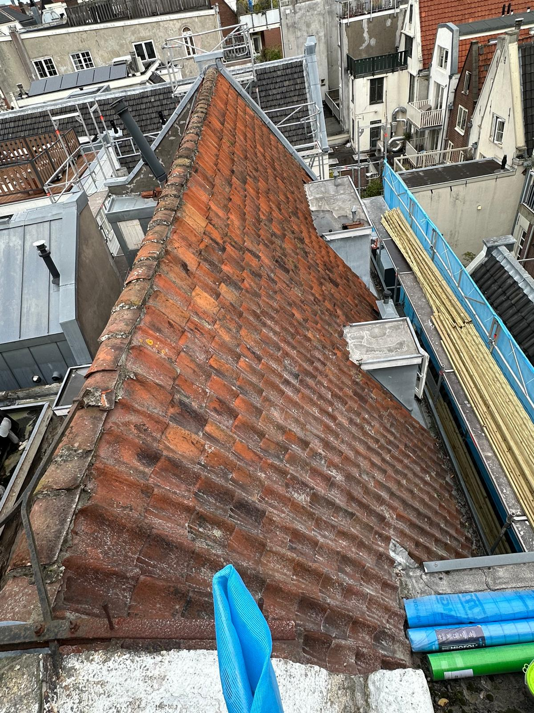
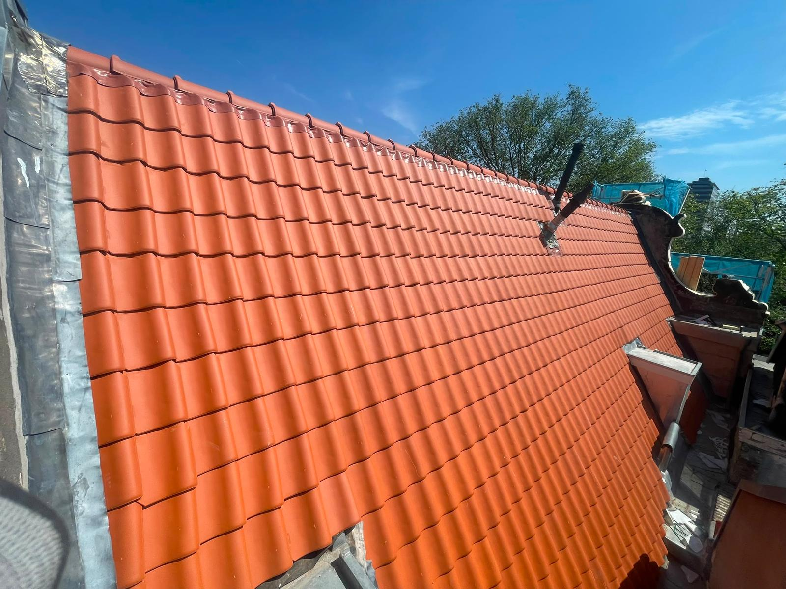
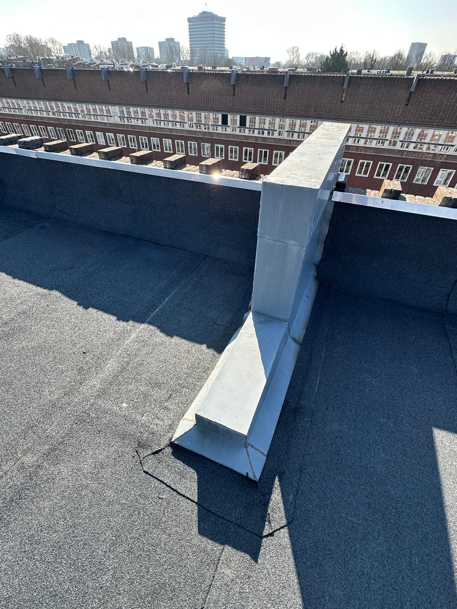
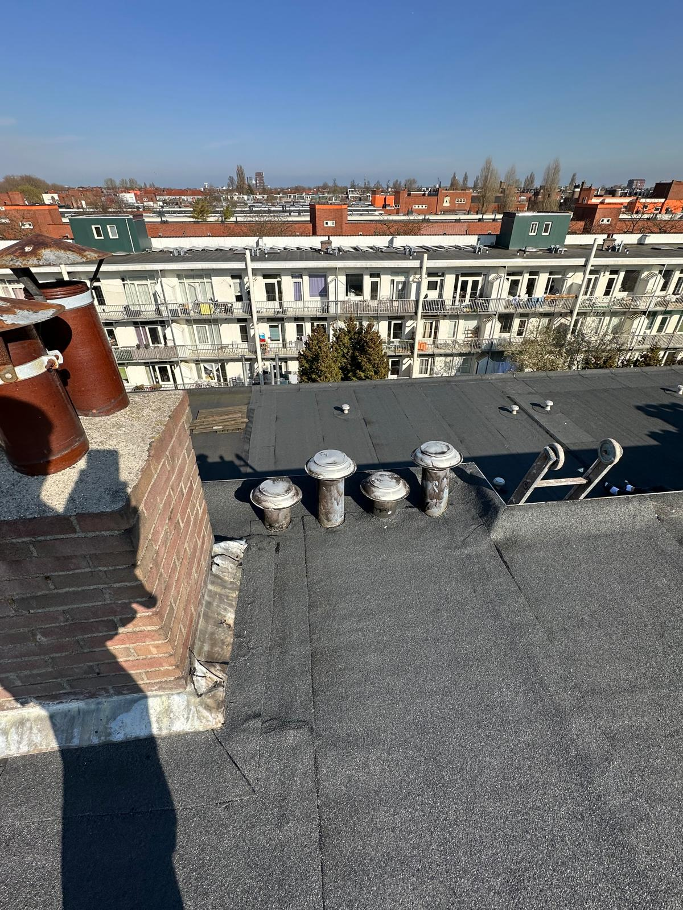
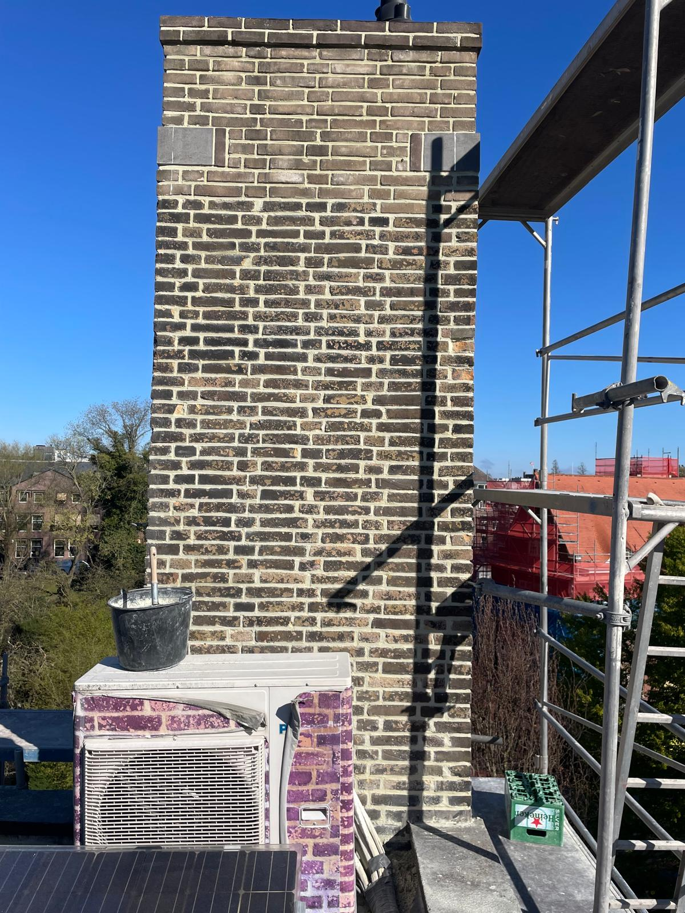
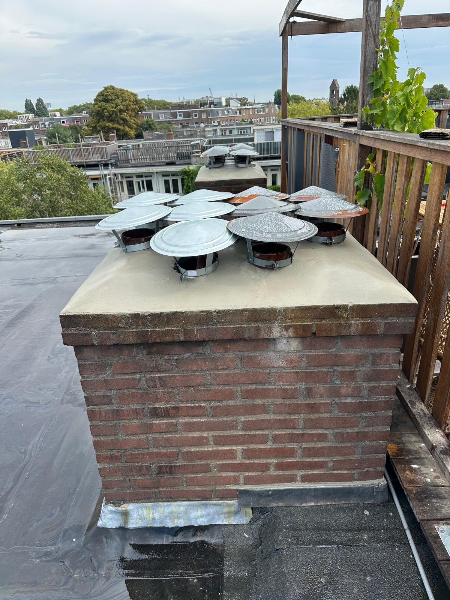

Van hoogwaardige dakrenovaties en bitumen platdaken tot het authentiek herstellen en voegen van uw schoorsteen.
Het dak en de schoorsteen krijgen het zwaar te verduren in het Nederlandse klimaat. Wij zorgen ervoor dat uw pand beschermd is tegen alle weersinvloeden, met speciale aandacht voor historische en complexe daken in binnensteden.
Werk op hoog niveau





